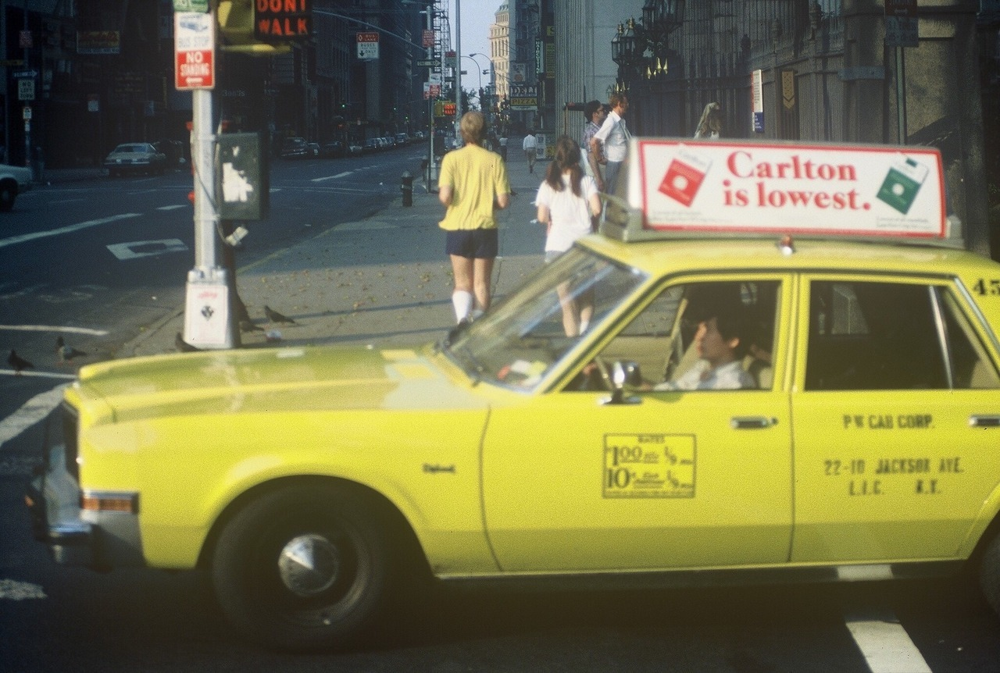
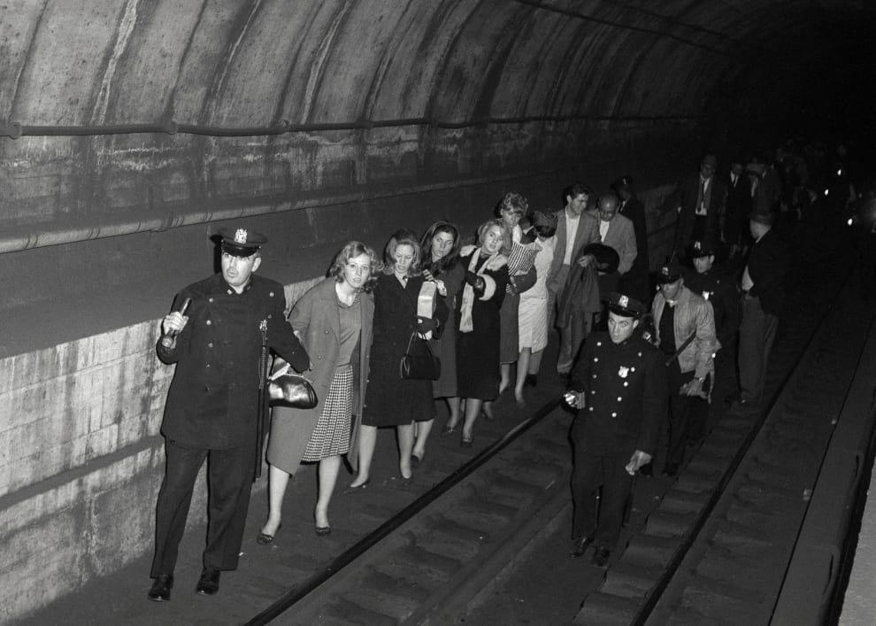
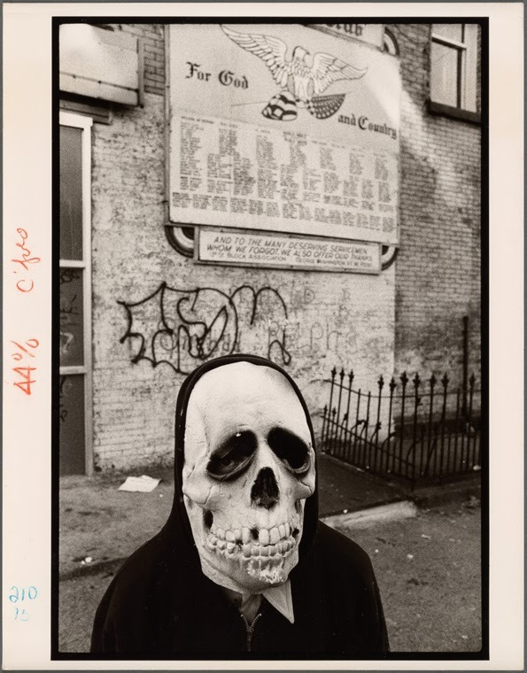
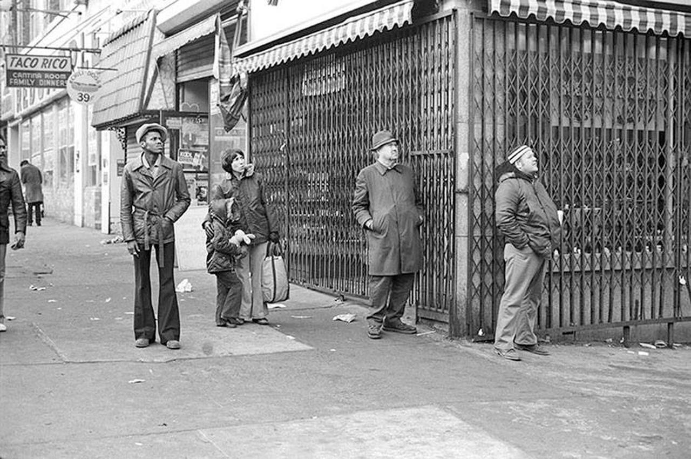

Bombed subway, 1981

Harlem Moon Bar, 136th St and Adam Clayton Powell Jr Blvd, 1978
Bombed subway, 1981

Taxi in 1981
Harlem Moon Bar, 136th St and Adam Clayton Powell Jr Blvd, 1978

Members of the NYC street gang “The Dirty Ones”, Williamsburg, Brooklyn, 1970’s.
via reddit
Public Enemy in the Village

Inside the WTC, 1979

Cops leading subway passengers to safety, 1965
documerica: erik calonius… new york 1973 @ usnationalarchives

Halloween in NYC, 1970s
CBGB’s in after a New York City snowstorm

Musicians at Columbus Circle, 1969

The West End and Papyrus Books, mid 80s

Henri Dauman, Rooftop living in NYC, 1966.

Riverside Theater, 96th and Broadway.

The Riverside Theater, mid-demolition. Here’s a window from the old Chess City in the same building, which then moved up into the 100s.

People watching the Riverside Theater get demolished. 96th and Broadway, 1976
The Clover Deli, 34th St and 2nd Ave, 1979
The 5th Precinct, 1979
Maxwell’s Plum in the 60s. A hip singles bar on the East Side.
Rocking a flower dress, 1977

Handball in 1978. Dude got crazy handball biceps.
Eccentric millionaire or homeless guy?

Manhattan Bridge, 1987, from series New York City, 1984/ 1987, by Janet Delaney.
The Beastie Boys in front of Stromboli Pizza in NYC, 1987. Photo by Lynn Goldsmith.